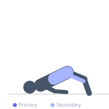
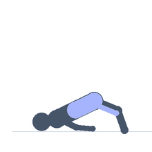

Exercise guide / Glute Bridge March
Glute Bridge March
An isometric and dynamic glute challenge performed by holding a glute bridge position while alternately lifting each foot off the floor in a marching pattern. The alternating leg lift forces the planted glute and core to resist pelvic rotation and maintain a stable bridge, increasing unilateral demand without additional load.
Primary muscles
gluteus maximus
gluteus medius
Secondary muscles
biceps femoris long head
transverse abdominis
Stabilizers
internal oblique
external oblique
Equipment
No Equipment (Bodyweight)
Optional
Resistance Band (Loop / Mini Band)


Starting position
- Lie on your back with knees bent, feet flat on the floor hip-width apart. Drive the hips up into a glute bridge position.
Setup
- No equipment needed. Optionally place a resistance band loop just above the knees for additional challenge.
Steps
- Step 1: Lift the hips into a glute bridge and hold the position, squeezing both glutes.
- Step 2: Keeping the hips level, lift one foot off the floor and bring the knee toward the chest.
- Step 3: Hold for a moment, then return the foot to the floor.
- Step 4: Repeat on the opposite side while maintaining the bridge position.
Coaching cues
- Keep the hips level
- Squeeze both glutes even when one leg is marching
Breathing
- Breathe steadily throughout. Do not hold your breath.
Range of motion
- Hips fully extended throughout. Each knee lifts to approximately 90 degrees.
Tempo
- Continuous — controlled march
Common mistakes
- Allowing the hips to drop or rotate when lifting each foot
- Pushing through the lower back rather than the glutes
Safety
- Ensure the hips stay level — place a dumbbell on the hips as a feedback tool if needed
Training
- strength: 3–8 reps
- endurance: 15–25 reps
- strength: 3–5 sets
- endurance: 2–3 sets
- Rest: {'strength': 180, 'endurance': 45}